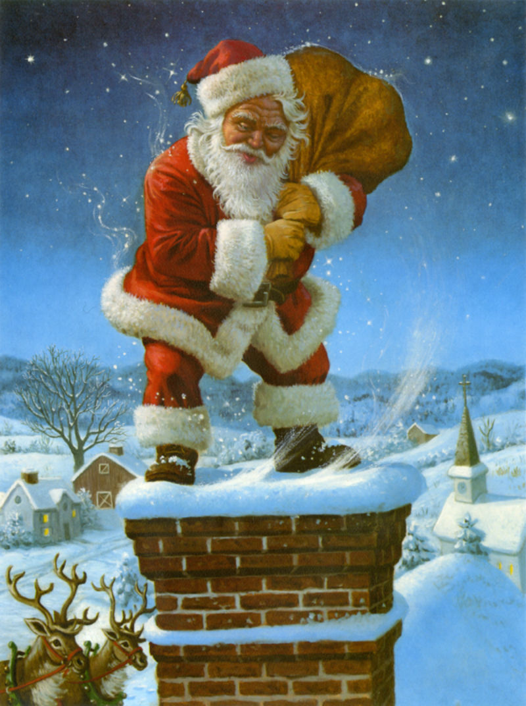
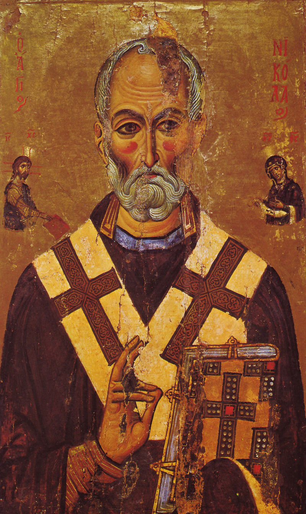
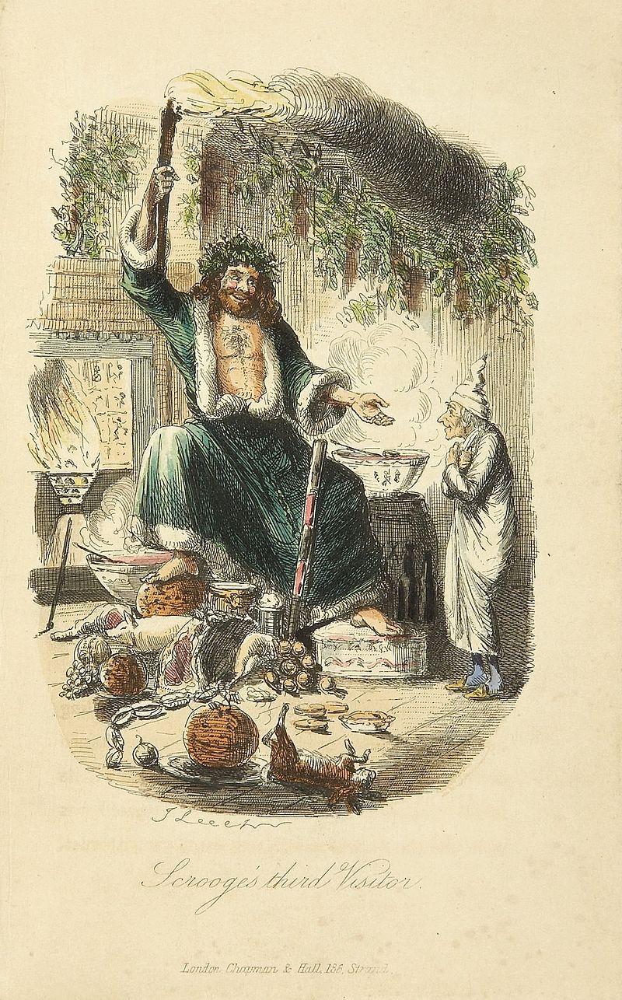
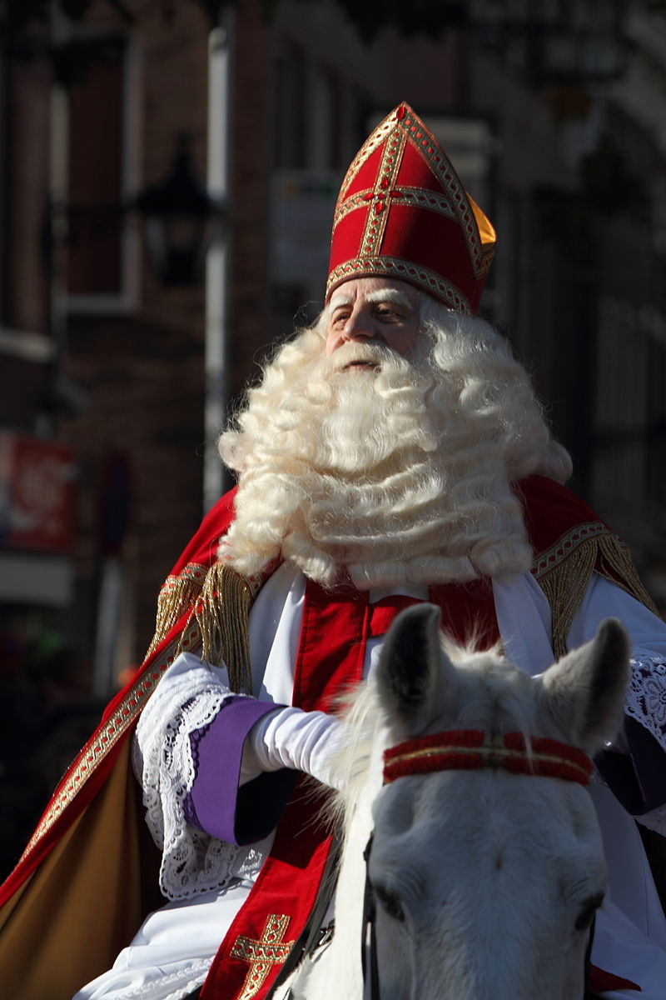
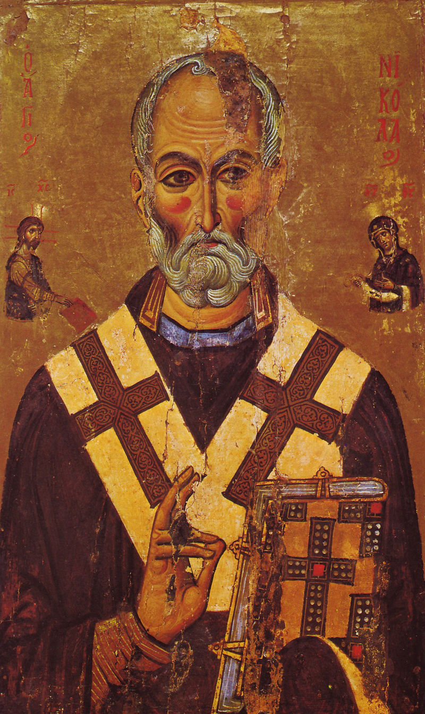
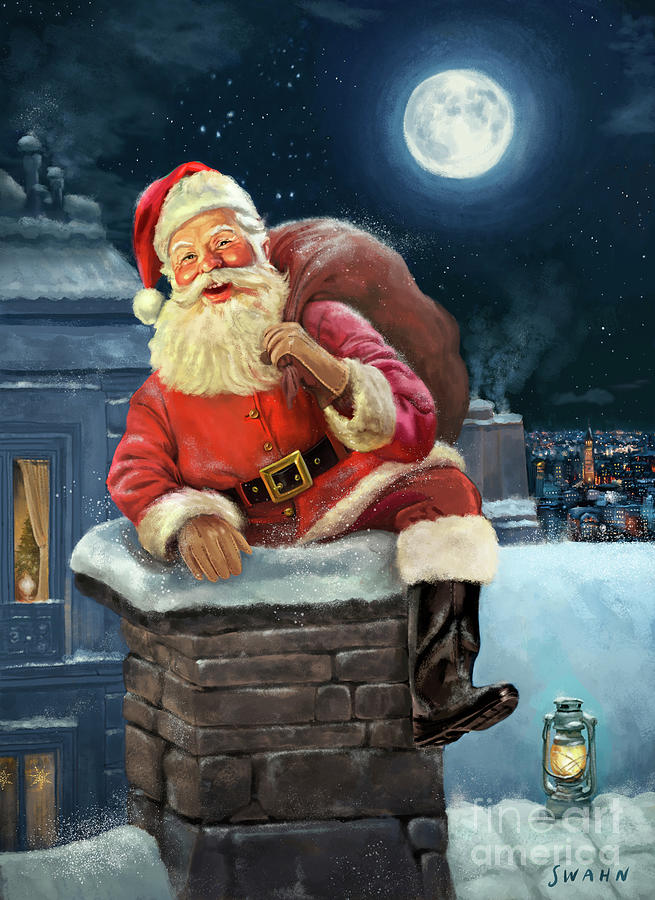
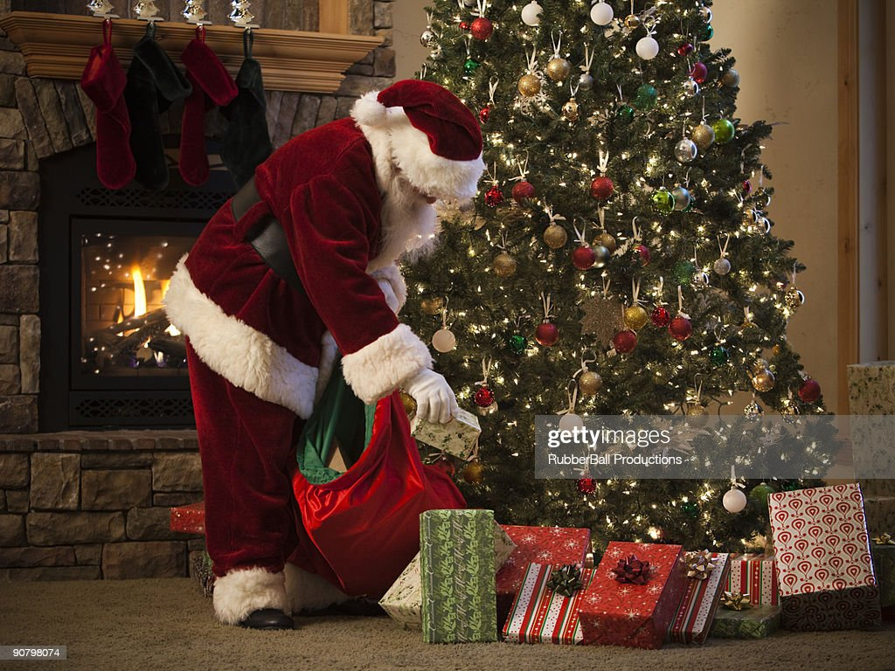
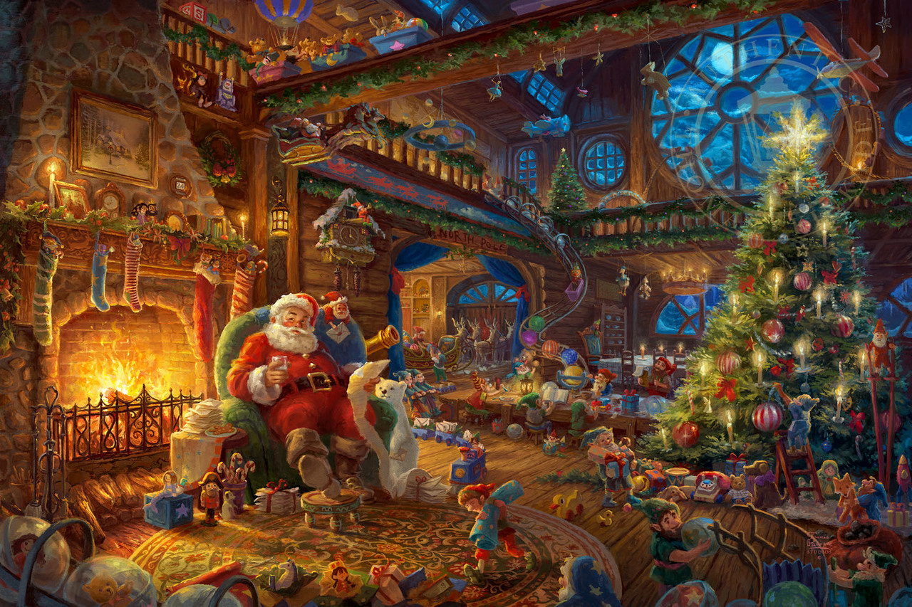
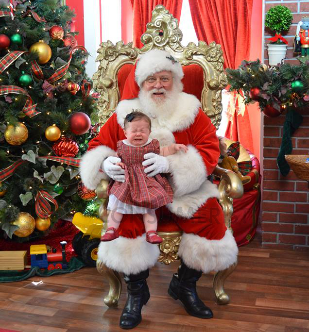
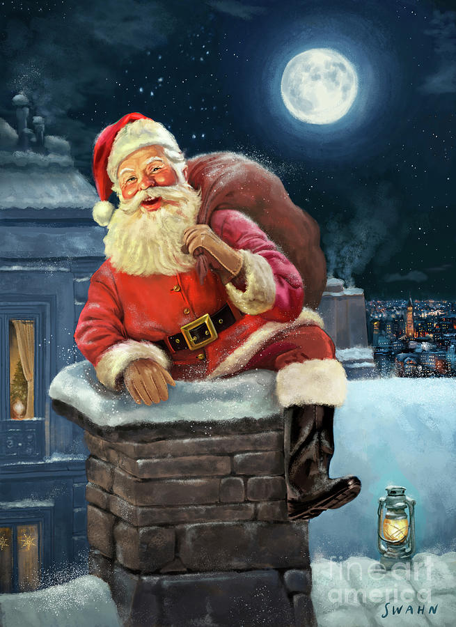

- Who is Santa Claus

Santa Claus, also known as Father Christmas, Saint Nicholas, Saint Nick, Kris Kringle, or simply Santa, is a legendary character originating in Western Christian culture who is said to bring children gifts on Christmas Eve of toys and candy or coal or nothing, depending on whether they are "naughty or nice". He supposedly accomplishes this with the aid of Christmas elves, who make the toys in his workshop, often said to be at the North Pole, and flying reindeer who pull his sleigh through the air.
The modern character of Santa is based on folklore traditions surrounding Saint Nicholas, the English figure of Father Christmas and the Dutch figure of Sinterklaas.
Santa is generally depicted as a portly, jolly, white-bearded man, often with spectacles, wearing a red coat with white fur collar and cuffs, white-fur-cuffed red trousers, red hat with white fur, and black leather belt and boots, carrying a bag full of gifts for children. He is commonly portrayed as laughing in a way that sounds like "ho ho ho". This image became popular in the United States and Canada in the 19th century due to the significant influence of the 1823 poem "A Visit from St. Nicholas". Caricaturist and political cartoonist Thomas Nast also played a role in the creation of Santa's image. This image has been maintained and reinforced through song, radio, television, children's books, family Christmas traditions, films, and advertising.
- Predecessor figures
- Saint Nicholas

Who Was Saint Nicholas? | National Geographic
For futher information about Saint Nicholas, press here.
- Father Christmas

Father Christmas dates back as far as 16th century in England during the reign of Henry VIII, when he was pictured as a large man in green or scarlet robes lined with fur. He typified the spirit of good cheer at Christmas, bringing peace, joy, good food and wine and revelry. As England no longer kept the feast day of Saint Nicholas on 6 December, the Father Christmas celebration was moved to 25 December to coincide with Christmas Day. The Victorian revival of Christmas included Father Christmas as the emblem of good cheer. His physical appearance was variable, with one image being John Leech's illustration of the "Ghost of Christmas Present" in Charles Dickens's festive story A Christmas Carol (1843), as a great genial man in a green coat lined with fur who takes Scrooge through the bustling streets of London on the current Christmas morning, sprinkling the essence of Christmas onto the happy populace.
- Dutch, Belgian and Swiss Folklore

In the Netherlands and Belgium, the character of Santa Claus competes with that of Sinterklaas, based on Saint Nicolas. Santa Claus is known as de Kerstman in Dutch ("the Christmas man") and Père Noël ("Father Christmas") in French. For children in the Netherlands, Sinterklaas remains the predominant gift-giver in December; 36% of the Dutch only give presents on Sinterklaas evening or the day itself, 6 December, while Christmas, 25 December, is used by another 21% to give presents. Some 26% of the Dutch population gives presents on both days. In Belgium, presents are offered exclusively to children on 6 December, and on Christmas Day all ages may receive presents. Saint Nicolas/Sinterklaas' assistants are called "Pieten" (in Dutch) or "Père Fouettard" (in French), so they are not elves. In Switzerland, Père Fouettard accompanies Père Noël in the French speaking region, while the sinister Schmutzli accompanies Samichlaus in the Swiss German region. Schmutzli carries a twig broom to spank the naughty children.
- Germanic paganism, Wodan, and Christianization

Prior to Christianization, the Germanic peoples (including the English) celebrated a midwinter event called Yule (Old English geola or giuli). With the Christianization of Germanic Europe, numerous traditions were absorbed from Yuletide celebrations into modern Christmas. During this period, supernatural and ghostly occurrences were said to increase in frequency, such as the Wild Hunt, a ghostly procession through the sky.[citation needed] The leader of the Wild Hunt is frequently attested as the god Odin (Wodan), bearing (among many names) the names Jólnir, meaning "Yule figure", and Langbarðr, meaning "long-beard", in Old Norse.
Wodan's role during the Yuletide period has been theorized as having influenced concepts of St. Nicholas in a variety of facets, including his long white beard and his gray horse for nightly rides (compare Odin's horse Sleipnir) or his reindeer in North American tradition. Folklorist Margaret Baker maintains that "the appearance of Santa Claus or Father Christmas, whose day is the 25th of December, owes much to Odin, the old blue-hooded, cloaked, white-bearded Giftbringer of the north, who rode the midwinter sky on his eight-footed steed Sleipnir, visiting his people with gifts. Odin, transformed into Father Christmas, then Santa Claus, prospered with St Nicholas and the Christchild, became a leading player on the Christmas stage."
In Finland, Santa Claus is called Joulupukki (direct translation 'Christmas Goat'). The flying reindeer could symbolize the use of fly agaric by Sámi shamans.
- Saint Nicholas

- Traditions and rituals
- Chimneys

The tradition of Santa Claus being said to enter dwellings through the chimney is shared by many European seasonal gift-givers. In pre-Christian Norse tradition, Odin would often enter through chimneys and fire holes on the solstice. In the Italian Befana tradition, the gift-giving witch is perpetually covered with soot from her trips down the chimneys of children's homes. In the tale of Saint Nicholas, the saint tossed coins through a window, and, in a later version of the tale, down a chimney when he finds the window locked. In Dutch artist Jan Steen's painting, The Feast of Saint Nicholas, adults and toddlers are glancing up a chimney with amazement on their faces while other children play with their toys. The hearth was held sacred in primitive belief as a source of beneficence, and popular belief had elves and fairies bringing gifts to the house through this portal. Santa's entrance into homes on Christmas Eve via the chimney was made part of American tradition through the poem "A Visit from St. Nicholas" where the author described him as an elf.
- Christmas Eve

In the United States and Canada, children traditionally leave a glass of milk and a plate of cookies intended for Santa to consume; in Britain and Australia, sherry or beer, and mince pies are left instead. In Denmark, Norway and Sweden, it is common for children to leave him rice porridge with sugar and cinnamon instead. In Ireland it is popular to leave Guinness or milk, along with Christmas pudding or mince pies.
For futher information about Christmas Eve, press here.
- "Ho, ho, ho!"
"Ho, ho, ho!" is the way that many languages write out how Santa Claus laughs. "Ho, ho, ho! Merry Christmas!" It is the textual rendition of a particular type of deep-throated laugh or chuckle, most associated today with Santa Claus and Father Christmas.
The laughter of Santa Claus has long been an important attribute by which the character is identified, but it also does not appear in many non-English-speaking countries. The traditional 1823 Christmas poem A Visit from St. Nicholas relates that Santa has: "a little round belly That shook when he laugh'd, like a bowl full of jelly"
- Santa's workshop and Location

Santa Claus's home is traditionally said to include a residence and a workshop where he is said to create—often with the aid of elves or other supernatural beings—the gifts he is said to deliver to good children at Christmas. Some stories and legends include a village, inhabited by his helpers, surrounding his home and shop.
In North American tradition (in the United States and Canada), Santa is said to live at the North Pole, which according to Canada Post lies within Canadian jurisdiction in postal code H0H 0H0 (a reference to "ho ho ho", Santa's notable saying, although postal codes starting with H are usually reserved for the island of Montréal in Québec). On 23 December 2008, Jason Kenney, Canada's minister of Citizenship, Immigration and Multiculturalism, formally awarded Canadian citizenship status to Santa Claus. "The Government of Canada wishes Santa the very best in his Christmas Eve duties and wants to let him know that, as a Canadian citizen, he has the automatic right to re-enter Canada once his trip around the world is complete," Kenney said in an official statement.
There is also a city named North Pole in Alaska where a tourist attraction known as the "Santa Claus House" has been established. The United States Postal Service uses the city's ZIP code of 99705 as their advertised postal code for Santa Claus. A Wendy's in North Pole, AK has also claimed to have a "sleigh fly through".
Each Nordic country claims Santa's residence to be within their territory. Norway claims he lives in Drøbak. In Denmark, he is said to live in Greenland (near Uummannaq). In Sweden, the town of Mora has a theme park named Tomteland. The national postal terminal in Tomteboda in Stockholm receives children's letters for Santa. In Finland, Korvatunturi has long been known as Santa's home, and two theme parks, Santa Claus Village and Santa Park are located near Rovaniemi. In Belarus, there is a home of Ded Moroz in Belovezhskaya Pushcha National Park.
In France, Santa is believed to reside in 1 Chemin des Nuages, Pôle Nord (1 Alley of Clouds, North Pole). The French national postal service has operated a service that allows children to send letters to Père Noël since 1962. In the period before Christmas, any physical letter in the country that is addressed to Santa Claus is sent to a specific location, where responses for the children’s letters are written and sent back to the children.
- Parades, department stores, and shopping malls

Actors portraying Santa Claus appear in the weeks before Christmas in department stores or shopping malls, or at parties. The practice of this has been credited to James Edgar, as he started doing this in 1890 in his Brockton, Massachusetts department store. The actor dressed up as Santa is usually helped by other actors (often mall employees) dressed as elves or other creatures of folklore associated with Santa. His function is either to promote the store's image by distributing small gifts to children, or to provide a seasonal experience to children by listening to their Wishlist while having them sit on his knee (a practice now under review by some organisations in Britain, and Switzerland). Sometimes a photograph of the child and actor portraying Santa are taken. Having a Santa actor set up to take pictures with children is a ritual that dates back at least to 1918.
The area set up for this purpose is festively decorated, usually with a large throne, and is called variously "Santa's Grotto", "Santa's Workshop" or a similar term. In the United States, the most notable of these is the Santa at the flagship Macy's store in New York City—he arrives at the store by sleigh in the Macy's Thanksgiving Day Parade on the last float, and his court takes over a large portion of one floor in the store. The Macy's Santa Claus in New York City is often said to be "the real Santa." This was popularized by the 1947 film Miracle on 34th Street with Santa Claus being called Kris Kringle. Essayist David Sedaris is known for the satirical SantaLand Diaries he kept while working as an elf in the Macy's display, which were turned into a famous radio segment and later published.
In Canada, malls operated by Oxford Properties established a process by which autistic children could "visit Santa Claus" at the mall without having to contend with crowds. The malls open early to allow entry only to families with autistic children, who have a private visit with the actor portraying Santa Claus. In 2012, the Southcentre Mall in Calgary was the first mall to offer this service.
In the United Kingdom, discount store Poundland changes the voice of its self-service checkouts to that of Santa Claus throughout the Christmas retail period.
There are schools offering instruction on how to act as Santa Claus. For example, children's television producer Jonathan Meath studied at the International School of Santa Claus and earned the degree Master of Santa Claus in 2006. It blossomed into a second career for him, and after appearing in parades and malls, he appeared on the cover of the American monthly Boston Magazine as Santa. There are associations with members who portray Santa; for example, Mr. Meath was a board member of the international organization called Fraternal Order of Real Bearded Santas.
Due to the COVID-19 pandemic, many Santa grottos were not operating for the 2020 Christmas season. Due to this, some companies offered video calls for a fee using apps such as Zoom where children could talk to an actor dressed up as Santa Claus at the other end.
- Letter to Santa
Writing letters to Santa Claus has been a Christmas tradition for children for many years. These letters normally contain a wishlist of toys and assertions of good behavior. Some social scientists have found that boys and girls write different types of letters. Girls generally write longer but more polite lists and express the nature of Christmas more in their letters than in letters written by boys. Girls also more often request gifts for other people.
Many postal services allow children to send letters to Santa Claus. These letters may be answered by postal workers or outside volunteers. Writing letters to Santa Claus has the educational benefits of promoting literacy, computer literacy, and e-mail literacy. A letter to Santa is often a child's first experience of correspondence. Written and sent with the help of a parent or teacher, children learn about the structure of a letter, salutations, and the use of an address and postcode.
According to the Universal Postal Union (UPU)'s 2007 study and survey of national postal operations, the United States Postal Service (USPS) has the oldest Santa letter answering effort by a national postal system. The USPS Santa letter answering effort started in 1912 out of the historic James Farley Post Office in New York, and since 1940 has been called "Operation Santa" to ensure that letters to Santa are adopted by charitable organizations, major corporations, local businesses and individuals in order to fulfil the wishes of children. Those seeking a North Pole holiday postmark through the USPS, are told to send their letter from Santa or a holiday greeting card by 10 December to: North Pole Holiday Postmark, Postmaster, 4141 Postmark Dr, Anchorage, AK 99530–9998.
In 2006, according to the UPU's 2007 study and survey of national postal operations, France's Postal Service received the most letters for Santa Claus or "Père Noël" with 1,220,000 letters received from 126 countries. France's Postal Service in 2007 specially recruited someone to answer the enormous volume of mail that was coming from Russia for Santa Claus.
- Chimneys

.jpg)